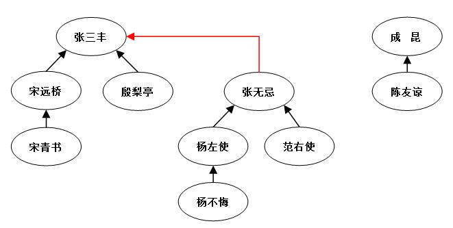

Set
Set 是一种用于保存不重复元素的数据结构。常被用作测试归属性，故其查找的性能十分重要。
编程实现
Python
Set 是python自带的基本数据结构， 有多种初始化方式。 Python的set跟dict的Implementation方式类似， 可以认为set是只有key的dict.
s = set()
s1 = {1, 2, 3}
s.add('shaunwei')
'shaun' in s # return true
s.remove('shaunwei')
并查集(Union-Set)
为了形象的说明并查集，首先来了解一个例子。江湖上存在各种各样的大侠，他们没什么正当职业，整天背着剑四处游荡，碰到其他大侠就大打出手。俗话说“双拳难敌四手”，这些大侠都会拉帮结派壮大实力。那么为了辨识每个大侠属于哪个帮派，就需要每个帮派都推举一个“老大”。这些大侠只需要知道自己和其他大侠的老大是不是同一个人，就能明白自己和对方是不是一个帮派，从而决定是否动手过招。

图2 江湖大侠关系图（箭头表示上一级）
缩进如图2，现在武当和明教分别推举张三丰和张无忌为老大。当帮派很大时，每个大侠记不住帮派所有人，那么他们只需要记住自己的上一级是谁，一级一级往上问就知道老大是谁了。某日，宋青书和殷梨亭在武当山门遇到，那么宋青书问宋远桥后得知自己的老大是张三丰，而殷梨亭的老大也是张三丰，那么他俩是同门。反之宋青书遇到陈友谅时，一级一级向上询问后发现老大不是一个人，就不是同门。
缩进除此之外，在武林中还需要组建联盟扩大帮派势力。既然杨不悔嫁给了殷梨亭，不妨直接设张无忌的上级为张三丰，这样就可以将明教和武当组成一个更大的联盟（如图2红色虚线。需要说明，我们只关心数据的代表，而忽略数据内部结构）。从此以后当宋青书再和杨不悔相遇，一级一级查询后可以确定是同伙了。但是如果大侠们相遇都像这样一级一级往上问，查询路径很长。所以这种直接连接最上级的方法不是最优。
缩进为了解决这个问题，需要压缩路径——每个人记住自己最终的老大就行（如宋青书记住自己老大是张三丰，不在去问宋远桥），基本思路如下：
1.以武当为例，张三丰创建门派（明教也类似）2.宋远桥和殷梨亭加入武当派，上级设置为张三丰3.宋青书通过与宋远桥的关系加入武当派，压缩路径后设置上级为张三丰，同时也设置其所有原上级的上级为张三丰（由于原上级宋远桥的上级就是张三丰，没有变化）。
缩进压缩完路径后的武当与明教状态图如下，其中红色代表压缩路径：

4.杨不悔通过与殷梨亭的关系也加入武当派别，压缩路径后设置上级为张三丰，同时设置原上级张无忌的上级是张三丰。绿色代表此次压缩路径。

缩进以后每次在合并中关系到了谁，就压缩谁的路径，同时压缩谁的所有上级的路径。此后宋青书和杨不悔的查询路径就短了很多。
5.假如某天范右使收徒了，徒弟也要加入联盟。在加入的时候，也需要压缩路径，设置徒弟的上级为张三丰；同时设置徒弟的原上级（范右使和张无忌）的上级为张三丰，如蓝色箭头。由于张无忌的上级就是张三丰，所以没有改变。这样，范右使的路径也得到压缩。

缩进看完例子之后，一起来看看并查集定义。并查集保持一组不相交的动态集合S={S1,S2,...,Sk}，每个动态集合Si通过一个代表ai来识别，代表是集合中的某个元素(ai∈Si)。在某些应用中，哪一个元素被选为代表是无所谓的，我们只关心在不修改动态集合的前提下分别寻找某一集合的代表2次获得的结果相同；在另外一些应用中，如何选择集合的代表可能存在预先说明的规则，如选择集合的最大or最小值作为代表。总之，在并查集中，不改变动态集合S则每个集合Si的代表ai不变。
缩进不妨设x表示每个结点，p[x]表示x的父结点（即上一级，如图2中p[宋远桥]==张三丰），rank[x]表示x节点的秩（即该节点最长路径中结点个数，如图2中最长路径为：张三丰-张无忌-杨左使-杨不悔，所以rank[张三丰]==4）。并查集伪代码如下：
- //创建Union-set
- MAKE-SET(x)
- 1 p[x] ← x //←号表示赋值
- 2 rank[x] ← 0
- //合并x和y，底层压缩路径
- UNION(x, y)
- 1 LINK(FIND-SET(x), FIND-SET(y))
- LINK(x, y)
- 1 if rank[x] < rank[y]
- 2 p[x] ← y
- 3 else
- 4 p[y] ← x
- 5 if rank[x]==rank[y]
- 6 rank[x] = rank[x] + 1
- FIND-SET(x)
- 1 if x ≠ p[x]
- 2 p[x] ← FIND-SET(p[x])
- 3 return p[x]
其中，MAKE-SET函数用于在无序数据中初始化并查集数据结构，将每个结点父结点设为其本身；UNION函数通过调用LINK和FIND-SET实现带压缩路径的并查集合并；LINK函数通过秩进行并查集合并；FIND-SET是带压缩路径的寻找结点代表的函数。如果还有不明白的地方，建议查阅《算法导论》中的第21章：《用于不相交的数据结构》。